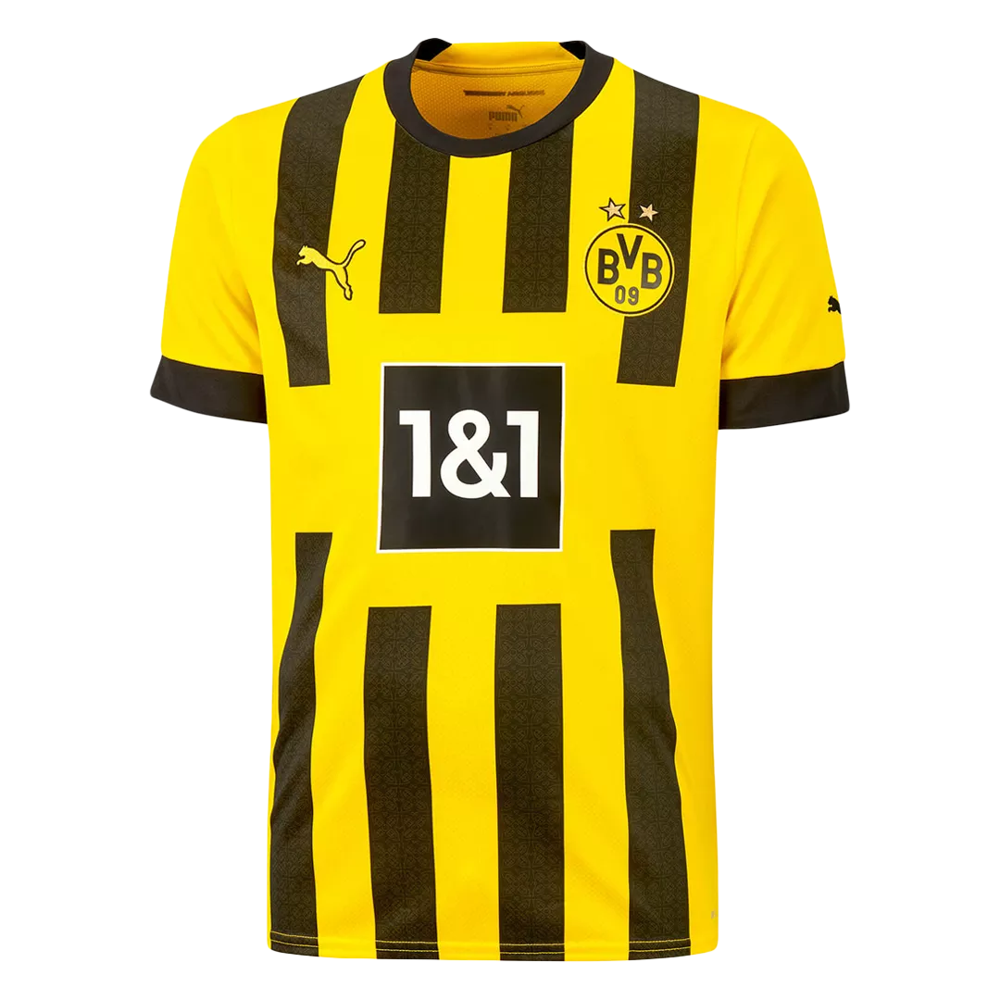

Borussia Dortmund


Liga dos Campeões da UEFA, Recopa Europeia da UEFA, Campeonato Alemão, Copa da Alemanha, Supercopa da Alemanha
| Jogadores Titulares | |
|---|---|
| Nome do Jogador | Num. da Camisa |
| Kobel | 01 |
| Wolf | 17 |
| Süle | 25 |
| Schlotterbeck | 04 |
| Guerreiro | 13 |
| Can | 23 |
| Brandt | 19 |
| Bellinghan | 22 |
| Özcan | 06 |
| Adeyemi | 27 |
| Haller | 09 |
| Jogadores Resrvas | |
|---|---|
| Nome do Jogador | Num. da Camisa |
| Soumaïla | 44 |
| Mahmoud | 08 |
| Mats | 15 |
| Donyell | 21 |
| Thomas | 24 |
| Alexander | 33 |
| Marcos | 11 |
| Giovanni | 7 |
| Tom rothe | 36 |
- 🏆 Liga dos Campeões da UEFA - 1 Título(s) - Temporada(s) - 1996–97
- 🏆 Recopa Europeia da UEFA - 1 Título(s) - Temporada(s) - 1965–66
- 🏆 Campeonato Alemão - 8 Título(s) - Temporada(s) - 1955–56, 1956–57, 1962–63, 1994–95, 1995–96, 2001–02, 2010–11 e 2011–12
- 🏆 Copa da Alemanha - 5 Título(s) - Temporada(s) - 1964–65, 1988–89, 2011–12, 2016–17 e 2020–21
- ⭐️ Supercopa da Alemanha - 6 Título(s) - Temporada(s) - 1989, 1995, 1996, 2013, 2014 e 2019
Aqui em Dortmund é um fenômeno
Que todas as pessoas por trás Borussia
Aqui é óbvio da tradição
Cada jogo no estádio
Quando criança eu vim com meu pai
E "já foi levado por sua
Borussia conecta gerações
Homens e mulheres, de todas as nações
A questão aqui não é rico ou pobre
Nós torcedores nas arquibancadas, somos todos iguais
No vento e do tempo estão todos lá, nós só queremos
Borussia, Borussia, Borussia Borussia
Paixão do Borussia
Uma paixão que cria amigos
Borussia, você joga como a região
Para alguns de nós até mesmo religião
Para muitas pessoas olhar
Você pode sempre encontrar uma maneira, você está sempre em
Borussia, você é magistral
E é por isso que te amo
Borussia, Borussia, Borussia etc